通常シーンをオフスクリーンレンダリング後、輝度が高いピクセルを抽出し、
ブラーとダウンサンプリングをかけながら複数枚のテクスチャを作成し、
複数枚のテクスチャの平均を取って加算合成しています。

通常シーン
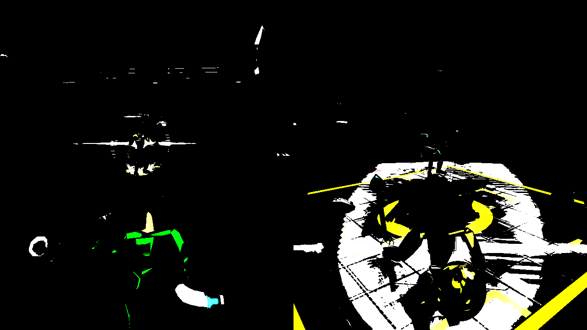
輝度抽出したテクスチャ
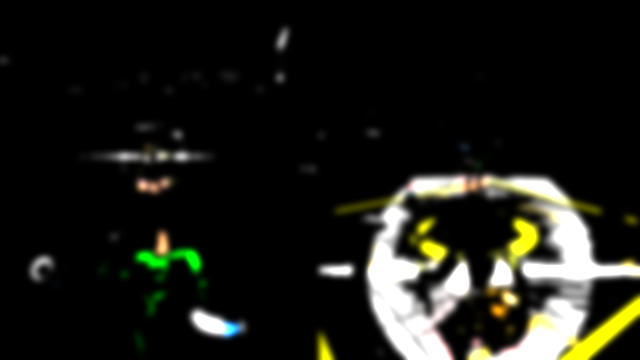
ブラーをかけながらダウンサンプリングしたテクスチャ
(さらにダウンサンプリングしながら複数枚作成)

加算合成後
三人称視点の二人対戦シューティングゲームで、
各プレイヤーにかかる磁力を考えた攻撃・行動をしながら
もう一人のプレイヤーを倒すゲームです。
紹介動画
学校内製エンジンを改造して使用
Visual Studio 2019
Visual Studio Code
3ds Max 2021
Adobe Photoshop Elements 2020
Git
C++
HLSL
Windows10
DirectX12
4人
2021年2月～2021年8月
2人のプレイヤーがそれぞれの視点を持つため、2つの画面が必要ですが、
複数のVIEWPORTを用意することで画面分割を実装しています。
分割せず画面全体に表示したいスプライト等のため、
画面全体を覆うVIEWPORTも用意し、そちらでスプライト等の描画を行っています。
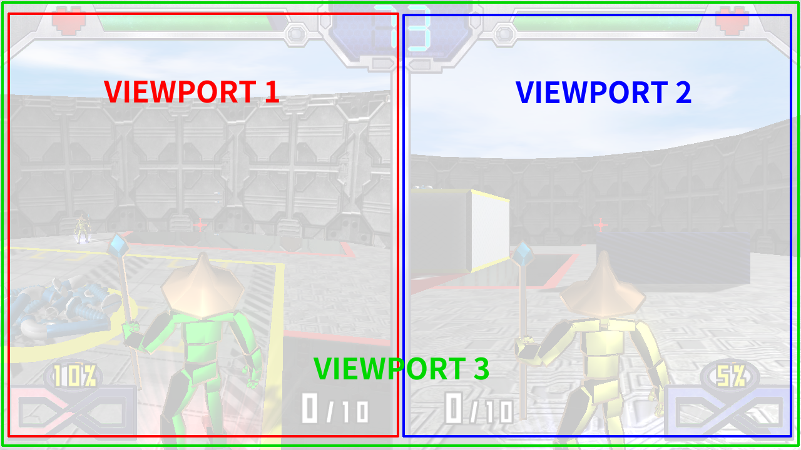
川瀬式ブルームを実装。
通常シーンをオフスクリーンレンダリング後、輝度が高いピクセルを抽出し、
ブラーとダウンサンプリングをかけながら複数枚のテクスチャを作成し、
複数枚のテクスチャの平均を取って加算合成しています。
通常シーン
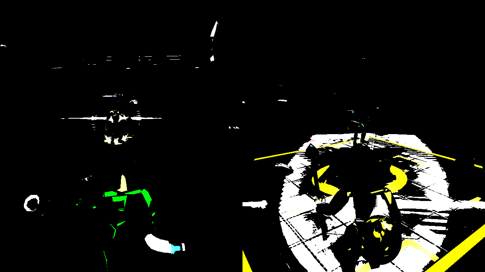
輝度抽出したテクスチャ
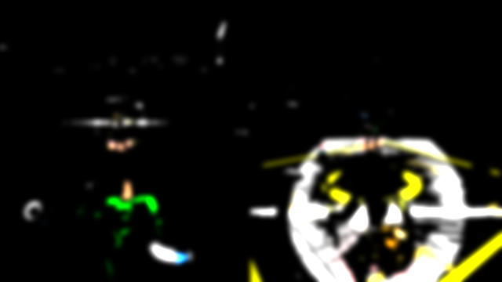
ブラーをかけながらダウンサンプリングしたテクスチャ
(さらにダウンサンプリングしながら複数枚作成)
加算合成後
影の描画には、カメラからの距離に応じて解像度の違う複数のシャドウマップを使い分ける
カスケードシャドウを使用しています。
そのため、近くの影は高品質に、遠くの影は低品質に(遠いので影響が殆どない)なっています。
画面が2つあるゲームなので、2(左画面、右画面) ✕ 3(近距離、中距離、遠距離)
の6つのシャドウマップに描画しています。
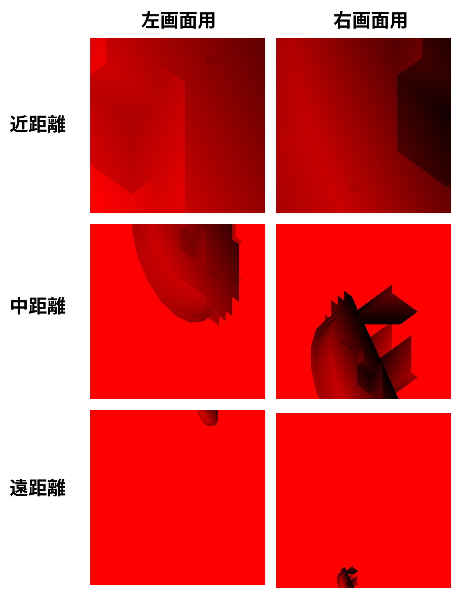
作成されたシャドウマップ
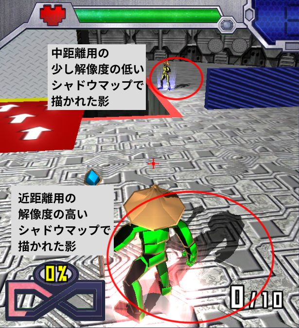
近距離と中距離用のシャドウマップで描かれた影
ディファードレンダリングを行い、ライティングの計算が呼ばれる回数を減らしています。
DirectXのマルチレンダーターゲット描画を利用し、アルベド、法線、ワールド座標のG-Bufferを出力しています。
その後、G-Bufferを使用してライティングを行う事で、
画面に描画されるピクセルのみにライティングの計算を行います。
また、今回はUVスクロールする空のみ特殊なライティングを行うので
ディファードレンダリングの後、空のみフォワードレンダリングで描画しています。
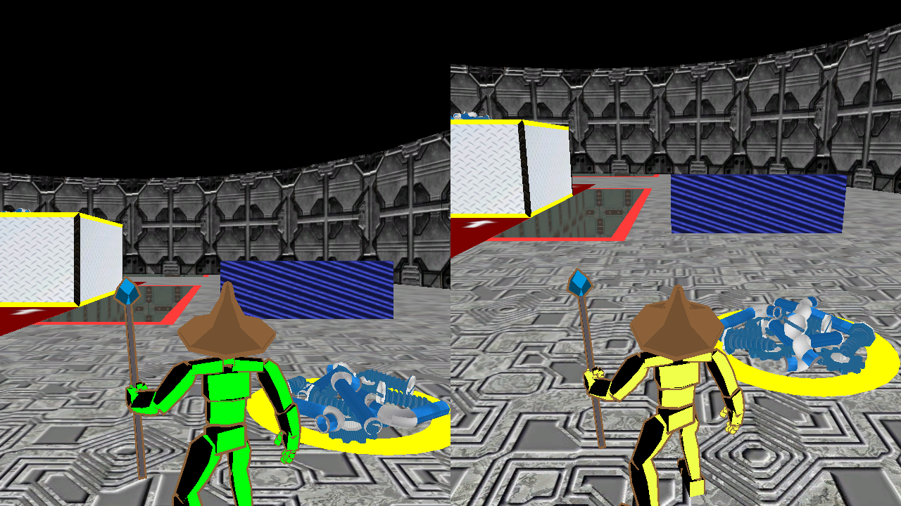
アルベドG-Buffer
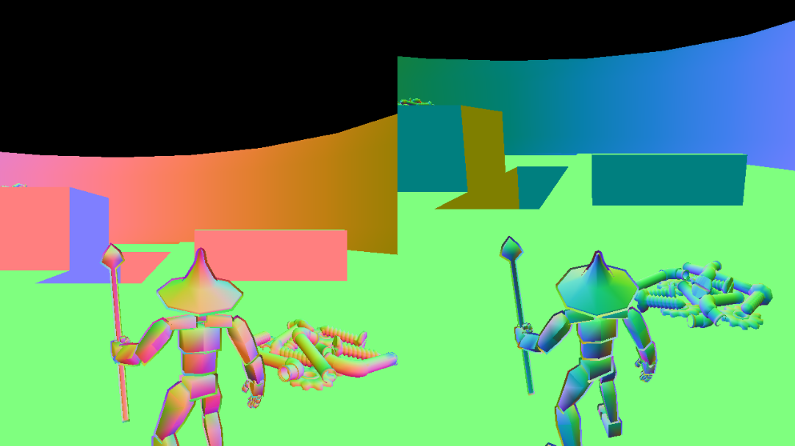
法線G-Buffer
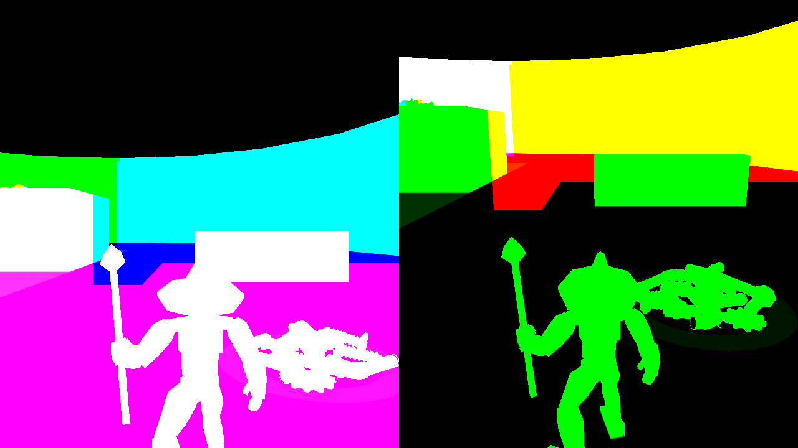
ワールド座標G-Buffer
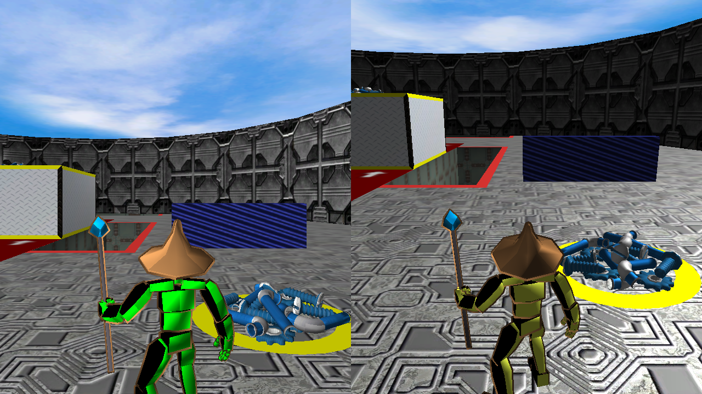
ディファードライティング+空のみフォワードレンダリング
プレイヤーと弾との当たり判定のため、カプセルコライダーを作成し、使用しています。
移動処理によって移動する前の弾の座標と、移動した後の弾の座標を
カプセルの端点にすることで、スピードの速い弾でもプレイヤーをすり抜けることなく
判定する事ができます。
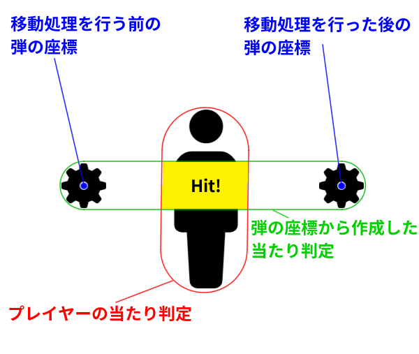
三人称視点のゲームのため、どうしても照準で狙う方向とプレイヤーが弾を発射する方向が
ずれてしまいます。
そこで、カメラから照準の方向にレイを飛ばし、
最初にレイがステージのモデルに当たった座標に向かって弾を発射するようにしています。
しかし、これだけでは相手プレイヤーを狙ったとしてもその奥にあるステージを狙う事になり、
相手プレイヤーに向かって弾を飛ばす事が困難です。
そこで、各プレイヤーに常に相手のプレイヤー方向を向く平面の当たり判定を用意し、
そこに照準の方向へのレイが交差した場合も交差地点に弾を発射するようにしました。
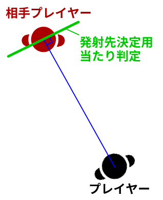
プレイヤーの向きに関係なく常に相手方向に向く
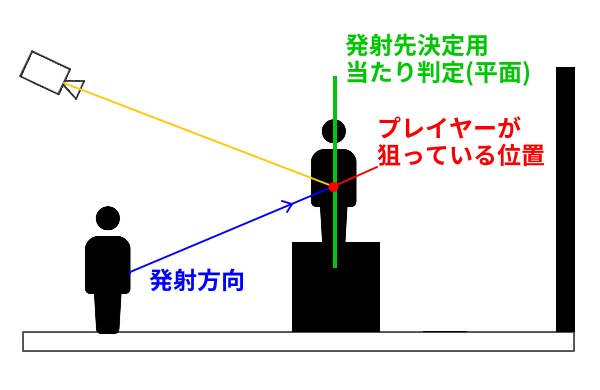
プレイヤーの磁力の状態を表すゲージとして、8の字の形のゲージを用意しています。
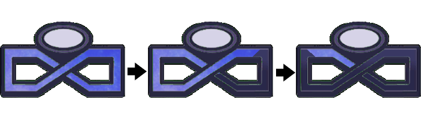
内積を利用して描画ピクセルの角度を計算し、指定した角度以上なら描画する
といったリングゲージを作成し、それを2つ並べて配置することで
8の字に減少するようにしました。
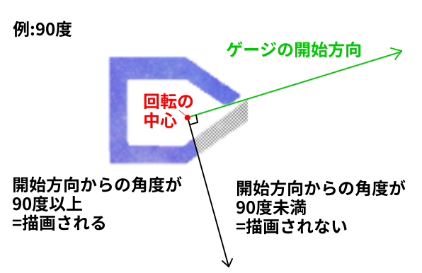
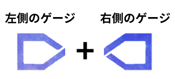
バトルに決着がついた際、2画面分割の対戦画面から演出用の1画面に切り替わり、
勝者を映す演出を流しています。
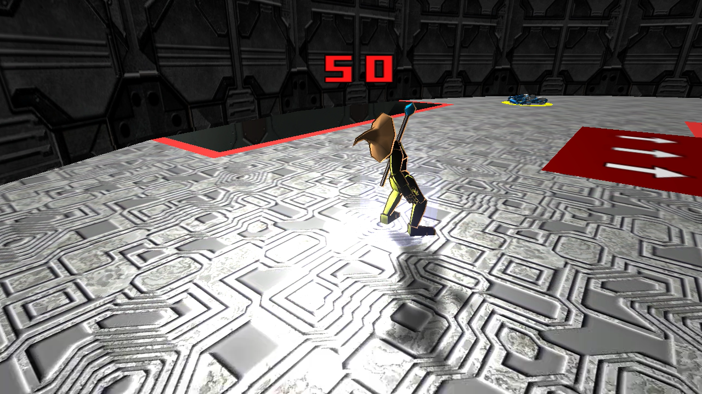
倒れる敗者を映し
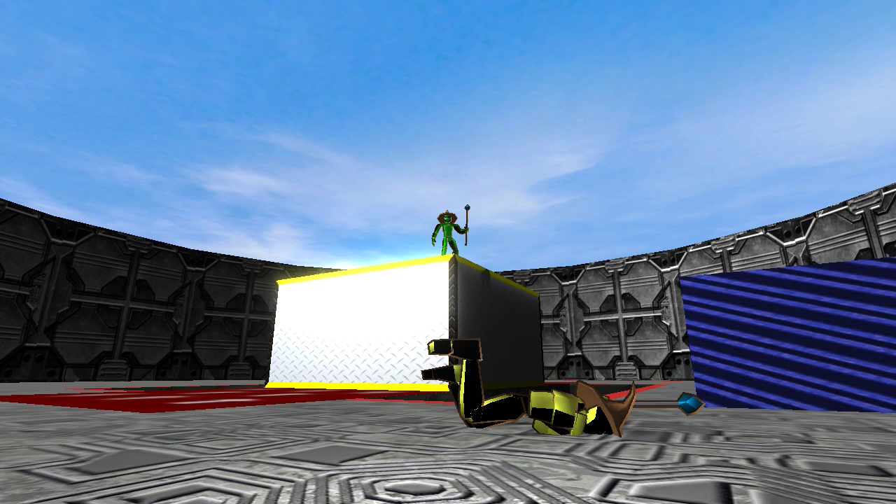
敗者からゆっくりと勝者にカメラが移動する
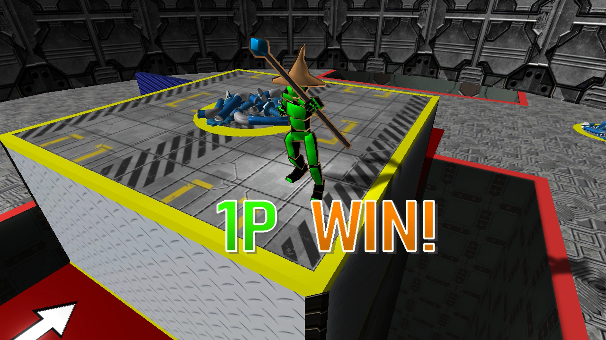
最後は勝者プレイヤーを映す
磁界之王では、引力状態では通常の攻撃は一切できず、バーストでも敵の弾を引き寄せてしまう完全なデメリット状態です。
しかし、攻撃に必要な弾は引力状態でしか集める事ができません。
斥力状態では通常の攻撃の他、バーストによって相手の攻撃を弾く事ができます。
このように、磁力の状態によってはっきりとした有利、不利を作る事で、
プレイヤーが今できる行動を明確にし、次に何をするか選択しやすいようにしています。